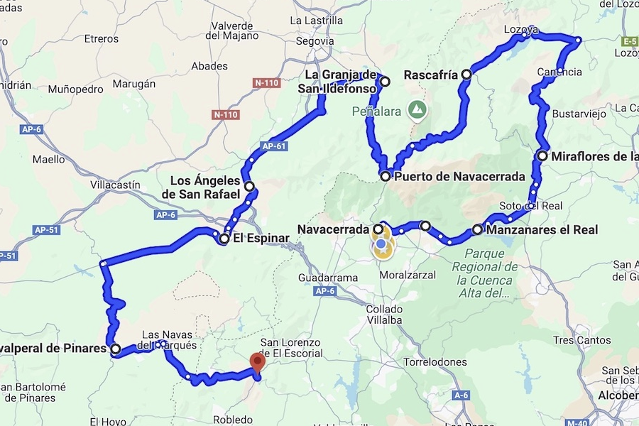

Ruta Puerto de Navacerrada
Navacerrada · Madrid
Sobre la ruta
Una ruta circular para disfrutar de los puertos y paisajes del Puerto de Navacerrada. Un recorrido pensado para motoristas que buscan buenas curvas, paisajes de montaña y una experiencia compartida sobre dos ruedas.
Recorrido
Navacerrada → Rascafría → Miraflores → Navacerrada

Detalles
Punto de encuentro
Parking del Puerto de Navacerrada.
Tipo de vía
Carreteras secundarias y puertos de montaña.
Recomendaciones
Depósito lleno y equipamiento completo.
Organizado por:
Escariz Rider